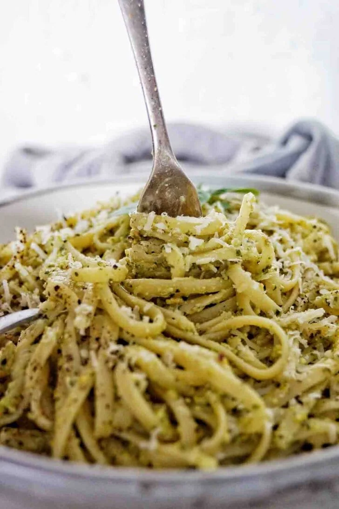

Recipes
Fettucine Alfredo

- Start by bringing water to a boil in a large pot. Add salt to the water to season the pasta. Once it is
boiling, add pasta and cook according to package instructions.
- Saute the garlic and butter together until softened — about 1 to 2 minutes.
- Add heavy cream and let simmer over medium-high heat for about 5 minutes to thicken. Add salt and pepper
to
taste. Add half of the parmesan cheese to the mixture and whisk well until smooth.
- Save some pasta water. The pasta water is full of flavor and can be used to thin out the sauce.
- Toss alfredo sauce with fettuccine pasta and add half of the parmesan cheese. Once it is tossed, garnish
with the remaining parmesan cheese. Add a little pasta water if it needs to be thinned out.
- Garnish with Italian parsley, if so desired.
Linguine Al Pesto

- Make pesto: add the fresh basil leaves, garlic, pistachio nuts and parmesan cheese to the food processor
bowl and blitz for about 15 seconds. Then scrap the edges down with a spatula to keep all of the
ingredients
low in the bowl.
- Oil: drizzle in the olive oil and blitz for around 5 seconds to combine. Then take a teaspoon and test a
little bit of the pesto.
- Lemon juice: pour in 1 tablespoon of lemon juice and blitz to combine. Use the spatula again to scrape
down
the sides of the pesto. Take the teaspoon and test another small amount of pesto. Add remaining
tablespoon
of lemon juice if needed to balance the flavours. Transfer combined pesto to a small bowl and set aside.
- Linguine: read and follow the packet instructions to cook the linguine in a medium saucepan of salted
water.
Before draining, use a heatproof jug to scoop out 1 to 2 cups of pasta water. Then use a colander to
drain
the saucepan and discard the water.
- Combine pesto and pasta: add the cooked pasta to a large sauté pan. Turn the heat to low. Dollop in the
pesto. Pour in ⅓ cup of the reserved pasta water and use a wooden spoon to stir and combine. Keep
stirring
till the pasta, water and pesto is consistently combined.
- Serve and enjoy: portion the pesto linguine into serving bowls, garnish with freshly grated parmesan
cheese,
cracked black pepper and fresh basil leaves. Provide forks and spoons for consuming.
Previous Page